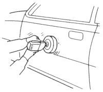
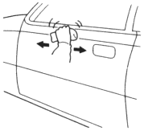

Drying
After spraying the clear coat, allow it to dry for 10 minutes, then force dry it with infrared lamps or other industrial dryer.
NOTE: Follow the top coat manufacturer's instructions for drying times.
- Polishing/buffing
Check that the clear coat has dried thoroughly.
The clear coat is cooled.
- Any adhesion or roughness on the top coat should be wet sanded and repaired.
| Use the #1200~#2000 and crystal block. |

- Polish any roughness caused by sanding.
NOTE: Clean the top coat surface frequently so you do not damage the clear coat with the polishing particles.
| Use a buffing towel, buffing wool and compound. |
- Finishes up with buffing.
NOTE:
- Do not use a power buffer.
- Do not polish too much; use light hand pressure.
| Use the buffing sponge, fine compound, very fine compound, then ultra fine compound. |

- After buffing, remove the masking paper and tape, and thoroughly wash the entire vehicle.